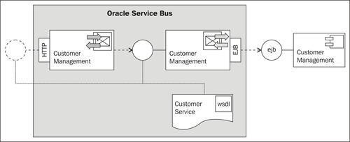
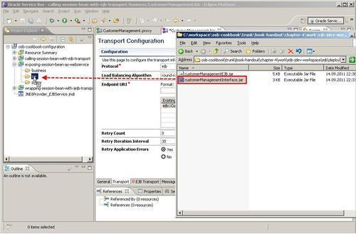
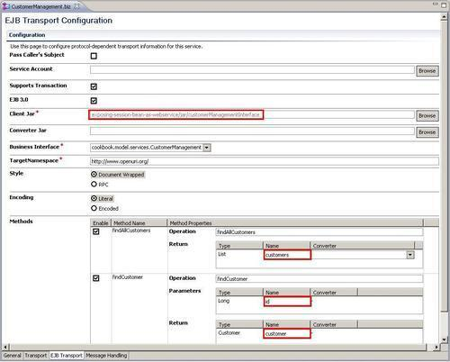
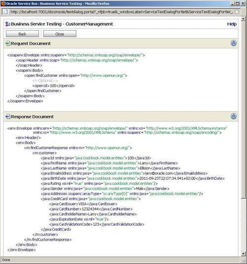
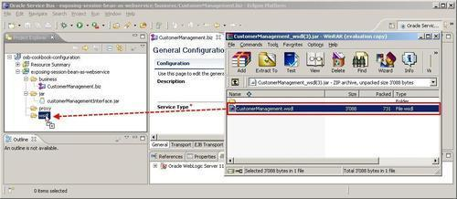
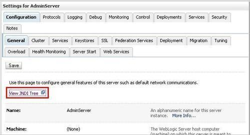
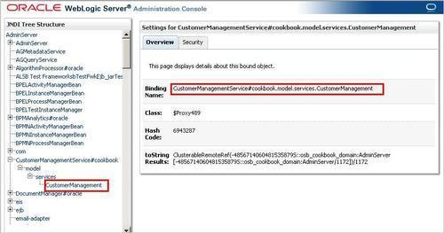
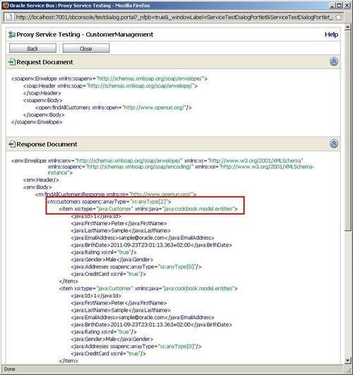

As the version of OSB is 11gR1 we can use an EJB version 3.0 session bean in an OSB business service. Before 11gR1, only EJB version 2.1 was supported.
In this recipe, we will create and test a business service—JB and JEJB transport. The business service calls a session bean that returns the Java object in XML or as a Java object with the JEJB transport.

Make sure that the EJB session bean is deployed to the OSB server as shown in the Introduction section of this chapter.
First we will have to register an EJB client JAR as a resource in Oracle Service Bus. The EJB client JAR contains the necessary interfaces and classes needed by the business service to access the EJB session bean.
In Eclipse OEPE, perform the following steps:
exposing-session-bean-as-webservice and create a jar, business, and proxy folder within it. ejb-jdev-workspace\ejb\deploy folder.
Next we create the business service and register the EJB client JAR within the EJB transport configuration. In Eclipse OEPE, perform the following steps:
business folder, create a new business service and name it CustomerManagement. ejb::CustomerManagementService#cookbook.model.services.CustomerManagement customers. id. customer:
Now we can already test the business service directly through the OSB console. Perform the following steps:
id of the request payload to 100 and click on Execute.
This business service, similar to any other business service, cannot be invoked from outside of OSB. To make it available, we can expose it as a web service.
In order to expose the business service as a web service, we need to know the WSDL of the business service. To retrieve the WSDL of the business service, perform the following steps in the Service Bus console:

Test the web service by either using Service Bus console or soapUI as shown in Chapter 1, Testing the proxy service through soapUI. Make sure that you test the findCustomer operation and pass 100 for the id.
We have configured a business service to use the EJB transport so that we can invoke it from the message flow. The EJB transport uses the JAX-RPC stack to perform the Java to XML bindings and vice versa. That's why we have seen the response returned from the business service formatted as XML. The EJB transport natively supports all primitive types, XmlObject, schema-generated XML Beans, and JavaBean classes. If an EJB method uses parameters/return types that are not supported by the JAX-RPC engine or do not map directly to XML, an error will occur. This happens if Java Collections like List, Set, or Map objects are used. In order to support such cases, a custom converter needs to be written and registered to the EJB transport.
This business service can be used like any other business service. It provides a WSDL, holding the definition of the service interface. Such a business service can be used in Publish, Service Callout, and Routing actions.
We have shown the latter in this recipe and implemented a proxy service that exposes the functionality of the EJB session bean on the OSB as a SOAP-based web service. We have directly reused the WSDL the business service provides for simplicity. This should be used with care, as it tightly couples the consumer with the EJB session bean. It's usually far better to let the proxy service implement its own service interface based on a canonical data model, and then use a transformation action to convert between the different XML formats as demonstrated in Chapter 1, Using an XQuery transformation to map between different data models of the services.
If we do not know the JNDI name for an EJB, we can browse the EJB Server JNDI tree. In the WebLogic console, perform the following steps:


Navigate to the model | services | CustomerManagement interface and the Binding Names on the detail view on the right side shows the JNDI name of the session bean.
If we invoke the findAllCustomers method, which returns a list of Customer instances, then the list is returned as a soap array in the result and the items of the collection are untyped. This can be seen in the following screenshot:

The reason for this is that the JAX RPC engine can't infer the type in the collection. Returning such a soap array can cause some serious interoperability issues, so we should try to avoid that.
The recipe, Using converter class with EJB transport to help converting data types, will show how this can be fixed by implementing a Converter class.